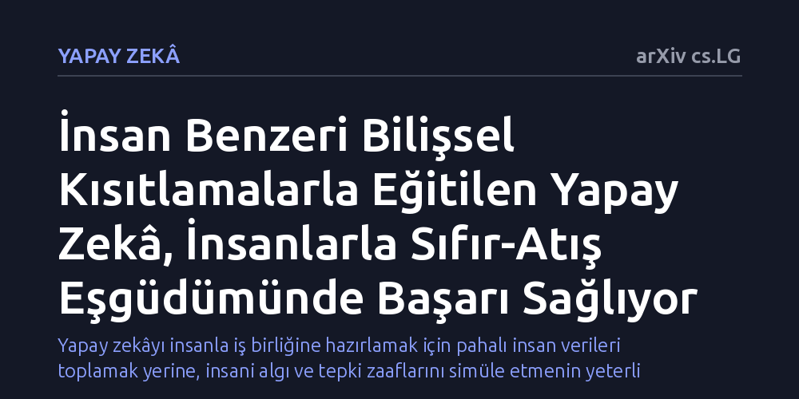

YAPAY-ZEKA · arXiv cs.LG · 2026-10-27
Araştırmacılar, yapay zekânın gerçek insanlarla önceden karşılaşmadan uyum içinde çalışmasını sağlamak için insan fizyolojisine dayalı bilişsel kısıtlar içeren simüle ortaklar geliştirdi. Bu ortaklarla eğitilen modeller, insan gibi oynayarak mevcut en güçlü eşgüdüm yöntemleriyle başa baş başarı gösterdi.
Yapay zekâyı insanla iş birliğine hazırlamak için pahalı insan verileri toplamak yerine, insani algı ve tepki zaaflarını simüle etmenin yeterli olabileceğini gösteriyor.

Yapay zekâ sistemleri karmaşık simülasyonlarda ve oyunlarda üstün başarı gösterse de, iş gerçek bir insanla anlık iş birliği yapmaya geldiğinde beklenmedik şekilde bocalayabiliyor. İnsanlar dikkat dağınıklıkları, biyolojik refleks sınırları ve kestirilemez hareketleriyle yapay zekâ için tahmin edilmesi güç ortaklardır. Simülasyon ortamlarında kendi kendileriyle ya da diğer kusursuz algoritmalarla eğitilen yapay zekâ ajanları ise insan mantığına uymayan yapay kurallar ve aşırı uzmanlaşmış alışkanlıklar geliştirir. Sonuç olarak, yapay zekâ daha önce hiç karşılaşmadığı bir insanla ilk kez bir araya geldiğinde ortak bir ritim yakalayamaz.
Bu uyumsuzluğu aşmanın bilinen yolu, gerçek insanlardan toplanan geniş davranış veri setlerini ya da anlık insan geri bildirimlerini pekiştirmeli öğrenmede kullanmaktır. Ancak yüzlerce saatlik insan verisi toplamak ve işlemek devasa bütçeler ve uzun süreler gerektirir. Öte yandan, sadece sanal ortamda üretilen yapay ortaklarla yapılan eğitimler insan gerçekliğinden kopuk kaldığı için 'sıfır-atış eşgüdüm' (yani önceden karşılaşılmayan bir partnerle anında uyum sağlama) başarısızlıkla sonuçlanır. Araştırmacılar, insan verisinin yüksek maliyetine katlanmadan yapay zekâyı insanla uyumlu kılmanın yollarını arıyor.
Yazarlar bu sorunu aşmak için ödül fonksiyonlarını yapay olarak değiştirmek ya da eski eğitim kopyalarını rastgele seçmek yerine doğrudan insan biyolojisi literatürüne başvurdu. İnsanların karar alırken ve hareket ederken yaşadığı fizyolojik tepki gecikmelerini ve anlık görsel algı sınırlarını matematiksel kurallarla tanımladılar. Bu kısıtlamalar, simülasyondaki yapay ortaklara bilinçli birer 'kusur' olarak eklendi ve ortaya 'Bilişsel Kısıtlı Ortaklar' (Cognitively Constrained Partners) modeli çıktı.
Deneyler, gerçek zamanlı ve iki oyuncu arasında bölünmüş kontrole sahip uyarlanmış bir Ay Taşıtı (Lunar Lander) simülasyon ortamında yürütüldü. Bu ortamda aracın yönünü ve itişini koordine eden yapay zekâ ajanları, kusursuz tepki veren algoritmalar yerine tıpkı bir insan gibi geç tepki veren ve görüşü sınırlı olan simüle ortaklarla birlikte eğitildi. Böylece yapay zekânın, karşısındakinin kusurlarını hesaba katarak esnek stratejiler geliştirmesi hedeflendi.
Deney sonuçları, bilişsel kısıtlamalar eklenen simüle ortakların oyunu standart yapay zekâ botlarına göre gerçek insanlara çok daha yakın bir tarzda oynadığını ortaya koydu. İnsani kısıtlar, sanal partnerlerin yapay kalıplara sıkışmasını engelleyerek doğal ve zengin bir davranış çeşitliliği üretti. Karşısında kusurlu bir partner bulan yapay zekâ ajanı, ezbere hamleler yapmak yerine esnek ve toleranslı hareket etmeyi öğrendi.
Bu yöntemle eğitilen ajanlar, literatürdeki en gelişmiş çapraz oyun (cross-play) modelleriyle başa baş bir performans sergiledi. Dahası, incelenen yöntemler arasında performansı eğitim ortaklarının nasıl üretildiğine bağımlı kalmayan tek yaklaşım bu oldu. Yani kısıtlı ortaklarla eğitilen modeller, partner üretim yöntemindeki değişikliklere karşı direnç göstererek farklı koşullarda tutarlı bir eşgüdüm sergiledi.
Bu çalışmanın ortaya koyduğu bulgu, yapay zekâyı insana alıştırmak için pahalı insan deneylerine her zaman ihtiyaç duyulmayabileceğini gösteriyor. İnsan zihninin ve bedeninin biyolojik sınırlarını simülasyona aktarmak, yapay zekânın gerçek dünyadaki insan düzensizliğine hazırlanması için yeterli bir zemin sunabilir. Bir algoritmayı insanla uyumlu kılmanın anahtarı, ona insanın üstün zekâsını değil, biyolojik sınırlarını ve gecikmelerini öğretmekten geçiyor olabilir.
Yine de bu sonuçların henüz bir simülasyon oyununda elde edilmiş ön bulgular olduğu unutulmamalıdır. Modelin başarısının gerçek insan katılımcılarla yapılacak kapsamlı eşgüdüm testlerinde doğrulanması gerekir. Çalışma hakem denetiminden geçip doğrulandığı takdirde, gelecekte otonom araçlardan arama-kurtarma robotlarına kadar insanla yan yana çalışacak sistemlerin çok daha ekonomik biçimde eğitilmesinin önü açılabilir.